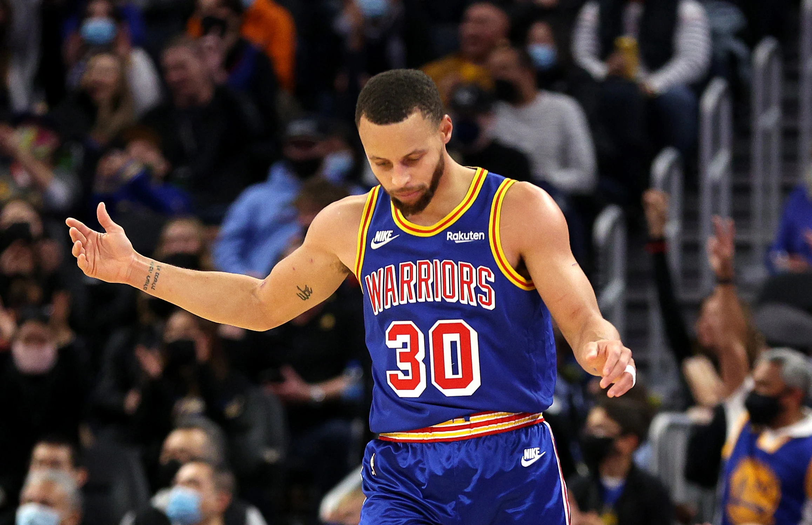
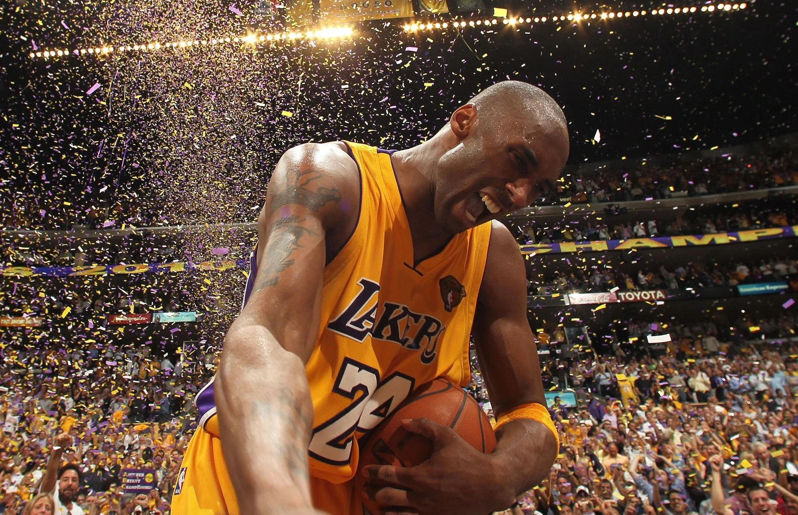
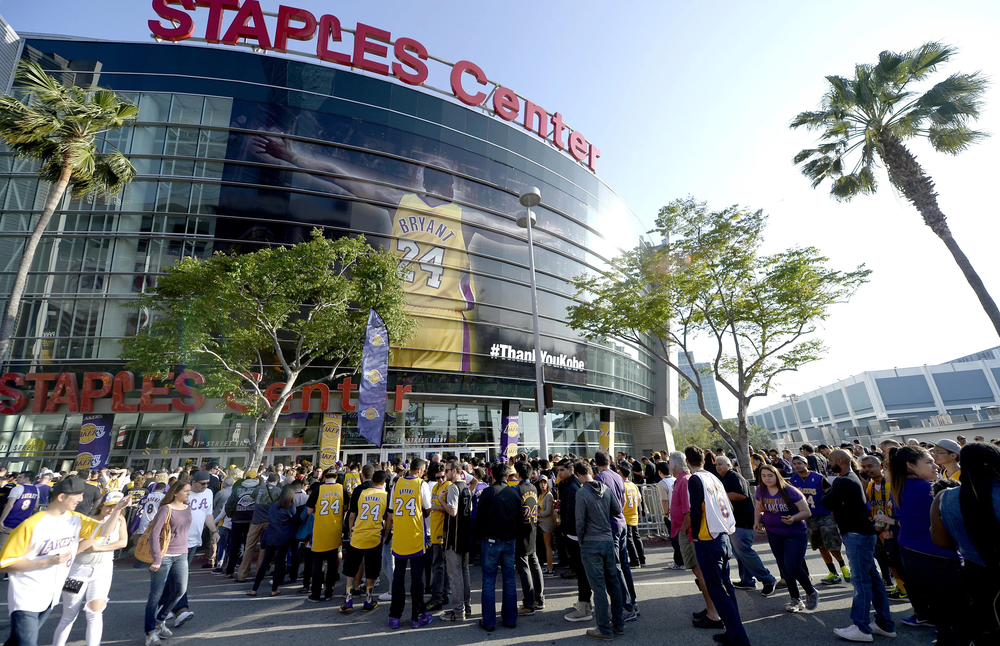
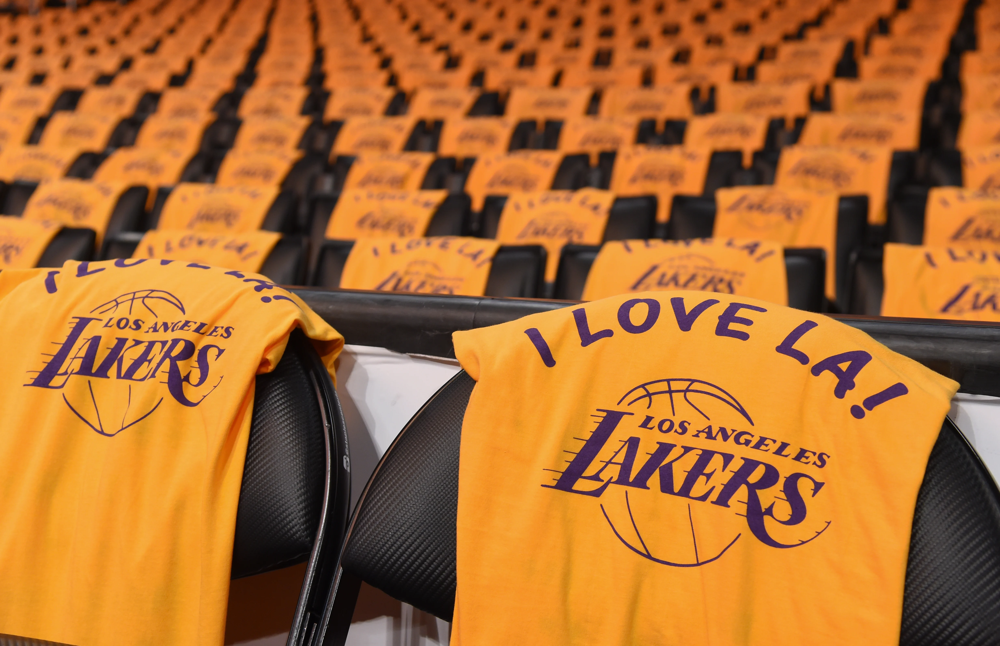

大通中心球馆躬伏着庞然身躯，在迎来送往中吞吐着奔流不息的人潮泱泱。蜂屯蚁聚般涌入球馆的人们都在翘盼着心所冀望的场面，一如斯蒂芬-库里两周前在麦迪逊广场花园缔造的盛象——他在当时命中生涯第2974记三分，正式超越雷-阿伦登临联盟历史之巅，雷-阿伦也赶赴现场抃贺他加冕历史三分王。
而现在，他回到球队主场大通中心迎来又一座荣辉闪熠的生涯里程碑。只是如今横屹于前的并非前人，而是他自己。伴随着库里在右侧三分线外挽弓射靶一箭穿心，他成为了联盟历史上首位生涯三分命中总数达到3000记的球员，并追平自己连续157场比赛命中三分的联盟历史最长纪录。
时间回溯到五年前，库里造访斯台普斯中心球馆时遭遇生涯滑铁卢，手感冰凉的他全场三分10中0，生涯连续157场比赛命中三分的纪录至此作古。从2014年对阵拥有蒂姆-邓肯、托尼-帕克、马努-吉诺比利与科怀-伦纳德的马刺，再到2016年对阵没有科比-布莱恩特的湖人，库里连续命中三分的纪录横跨了更迭的时代。
彼时的库里刚在前一个赛季命中402记三分创造历史，并成为联盟历史上首位全票当选常规赛MVP的球员，在一时无两的盛誉之下，库里下一场比赛的三分表现无疑更加符合人们对他的预期——是役，触底反弹的库里命中13记三分创造联盟当时的单场三分最高纪录。
单场三分挂零对库里而言是何概念？生涯794场比赛，库里只有39场未能命中三分，其中至少出手10次三分均投失的场次只有2场，此外也有4场是提前伤退导致未能出手三分。而自从库里生涯首个MVP赛季以来，他未能命中三分的场次更是只有6场，其中造访斯台普斯中心独占2场。
库里生涯场均三分命中率高达43.1%，可当他来到斯台普斯中心挑战湖人时，他的三分命中率却仅有31.3%。从洛杉矶穹顶倾覆而下的云翳笼罩着斯台普斯中心的篮筐，在这座球馆连年哑火的库里也无奈地说道：“我自己也不知道，若有人了解其中缘由，拜托告诉我吧。”
斯台普斯中心或许是库里的修罗场，但与此同时，这座球馆也是数代传奇的封神台。
想当年，沙奎尔-奥尼尔屹立赛场擎天撼地，霸气鼓荡所向无匹，他在斯台普斯中心成就三连冠的伟业，一代王朝拔地万仞耸峙岳立。
想当年，科比-布莱恩特杀机凛然气吞万里，金戈铁马千夫莫敌，他在斯台普斯中心坚守二十载的春秋，两身战袍相映成辉垂荣退役。
想当年，勒布朗-詹姆斯转投湖人巅峰犹在，没落王师征途复启，他在斯台普斯中心重塑洛杉矶的荣光，几度沉浮终究不负争冠之期。
但伴随着场馆冠名权的易主，斯台普斯中心在上周已经更名。
逾年历岁，人事变迁，陪伴着无数人度过漫长岁月的斯台普斯中心已成为历史往事。
对此，奥尼尔慨叹道：“如此一来，斯台普斯中心就将永远属于我和科比了。”
在斯台普斯中心竣工的那一年，奥尼尔与科比随队从大西部论坛球馆搬迁到此，并在当赛季联袂捧起生涯首座总冠军奖杯。尽管他们在湖人王朝崩塌后风流云散各奔前程，但忠守一城的科比此后又在斯台普斯中心两度问鼎联盟。
正是英雄的光辉，映衬出斯台普斯中心的荣盛。值此之际，人们愈发怀念过去，也愈发怀念科比，怀念他在登临这片场地时傲然睥睨各路英雄的少年意气，怀念他在征服这片场地时豪取81分流芳青史的巅峰盛景，也怀念他在辞别这片场地时攻下60分创造纪录的垂暮归行。
人生总是如此，在推你走向未来的同时也在唤你回看过去，你或许会觉得这是在怀念，但其实这是在道别。
斯台普斯中心经历过声势浩荡的道别盛礼。那一年，科比的退役巡演在斯台普斯中心垂落帷幕，他的一句Mamba Out道尽离情别绪，但他与斯台普斯中心故事未了。人们知道的，他还会回来的。
斯台普斯中心也经历过摧心剖肝的生离死别。那一年，一代传奇在雾瘴迷航中陨落为故往尘烟，数天之内有近三十万人涌向斯台普斯中心广场沉痛悼念。人们知道的，他不会回来了。
现在，斯台普斯中心迎来了自己的告别礼。在迎来斯台普斯时代的最后一战之前，湖人发布的声明写道：“斯台普斯中心是我们这22年称之为家的地方，这是球馆内18997名观众的家。即使球馆更名，这也永不会变。”
可人们都知道的，这座球馆仍将昂然屹立在洛杉矶的繁华之下，只是这座球馆已不再是斯台普斯中心。
或许，这座球馆也不再是困缚库里的“一生之敌”。
人们未必记得库里之前是在哪座球馆创造连续157场比赛命中三分的历史纪录。即使库里创造纪录的那场比赛并不缺乏媒体报道，当时正是杜兰特加盟勇士后首次对阵旧主雷霆，各路媒体都赶赴奥克兰的甲骨文球馆，争先恐后地用镜头记录着这场恩怨对决。
但人们时常想起库里纪录中断的地方是斯台普斯中心。正是如此，当库里在大通中心追平自己所保持的历史纪录时，从人们脑海中瞬息闪回的或许还是他在斯台普斯中心哑火的窘况。
于是，人们又会怀念起斯台普斯中心的一切——那些英雄史诗，那些峥嵘岁月，那些人事无常。
人们在循环往复地怀念，人们也在循环往复地道别。
米切尔：相比上赛季的交手 今年进步显著
NBA76大巨星之凯文-杜兰特
凯文-杜兰特十大比赛：现役单打之王